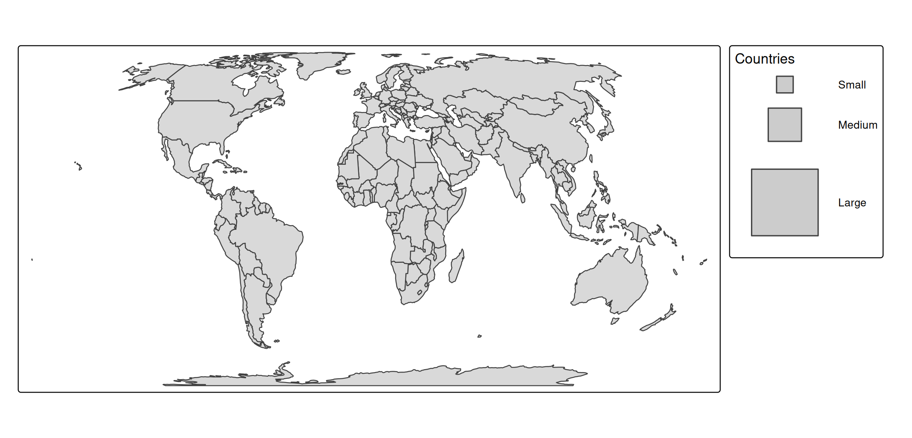

This vignettes builds on the introduction vignette about legends and about scales
For convenience let’s assign the tm_shape element to s:
s = tm_shape(World, crs = "+proj=eqearth")Item labels
Single numbers
Numbers of numeric legends are formatted with the label.format argument of the scale function, e.g. tm_scale_continuous:
s + tm_polygons("HPI", fill.scale = tm_scale_continuous(values = "pu_gn_div"))
s + tm_polygons("HPI",
fill.scale = tm_scale_continuous(
values = "pu_gn_div",
label.format = tm_label_format(digits = 3)))
s + tm_polygons("HPI",
fill.scale = tm_scale_continuous(
values = "pu_gn_div",
label.format = tm_label_format(scientific = TRUE)))
s + tm_polygons("HPI",
fill.scale = tm_scale_continuous(
values = "pu_gn_div",
label.format = tm_label_format(prefix = "<", suffix = ">")))
s + tm_polygons("HPI",
fill.scale = tm_scale_continuous(
values = "pu_gn_div",
label.format = tm_label_format(fun = function(x) {
lst = strsplit(sprintf("%05d", x), split = "")
sapply(lst, function(y) {
do.call(paste, c(as.list(y), list(collapse = " ")))
})
})))Intervals
For the formatting of interval labels there are a few additional options.
Consider this map
s + tm_polygons(
fill = "HPI",
fill.scale = tm_scale_intervals(breaks = seq(10, 60, by = 10)))
First of all note that intervals are by default closed on the left-handside, so the first interval represents all values from (and including) 10 to (and not including) the next break which is 20.
How intervals are closed is configured with interval.closure.
Apart from how intervals are closed, another choice is how to present them. In the old tmap version (<= 4.1), they were labeled as "10 to 20", "20 to 30". This lead to a lot of confusion because it was unclear where 20 belonged to. This old option can be enabled via the argument label.disjoint of tm_label_format():
s + tm_polygons(
fill = "HPI",
fill.scale = tm_scale_intervals(
breaks = seq(10, 60, by = 10),
label.format = tm_label_format(interval.disjoint = FALSE)))
With the new default (interval.disjoint = TRUE) the argument digits can be used additionally:
s + tm_polygons(
fill = "HPI",
fill.scale = tm_scale_intervals(
breaks = seq(10, 60, by = 10),
label.format = tm_label_format(digits = 2)))
Use -Inf for the first break and Inf for the last break to trigger labels that reflect “less than” and “or more” respectively. How these are formatted can be specified with label.format:
s + tm_polygons(
fill = "HPI",
fill.scale = tm_scale_intervals(
n = 6,
style = "fixed",
breaks = c(-Inf,10,20,30,40,50, Inf),
values = "pu_gn_div",
label.format = tm_label_format(
text.separator = "to",
text.less.than = "less than",
text.less.than_as.prefix = TRUE,
text.or.more = "or more",
text.or.more_as.prefix = FALSE)
))
Big numbers
By default, big numbers are abbreviated. If differences among legend values are sufficiently large, they are presented in millions, billions etc.
s + tm_polygons() +
tm_bubbles(size = "pop_est")
The big number abbreviations are specified in big.num.abbr. The default value is
tmap_options("label.format")[[1]]$big.num.abbr
#> mln bln trn qdn qnt
#> 6 9 12 15 18Instead, we can define the population count in ‘thousands’:
tm_shape(NLD_muni) +
tm_bubbles(
size = "population",
size.scale = tm_scale_continuous(
label.format = tm_label_format(
big.num.abbr = c(thousand = 3))))
Multiple legends
When there are multiple data-driven visual variables for which legends are produced, there are a couple of things to consider
Neutral values
Each scale function has a value.neutral argument. This defines what visual value is used in the other legends. Example:
s +
tm_bubbles(
fill = "HPI",
size = "pop_est",
fill.scale = tm_scale_continuous(values = "-matplotlib.rainbow"))
We’ve used a gradient scale to map happy planet index (note that the minus sign reverses the palette). When value.neutral is not specified, the middle color (green) is used. My personal preference would be to use a neutral gray color with the same brightness as the palette colors:
s +
tm_bubbles(
fill = "HPI",
size = "pop_est",
fill.scale = tm_scale_continuous(
values = "-matplotlib.rainbow",
value.neutral = "gray70"))A different approach to achieve the same result is to update the size legend:
s +
tm_bubbles(
fill = "HPI",
size = "pop_est",
size.legend = tm_legend(fill = "gray70"),
fill.scale = tm_scale_continuous(values = "-matplotlib.rainbow"))This method, where visual variables are passed on via tm_legend will be covered in the section about setting visual values.
Combining legends
It is also possible to combine legends, which is useful if two visual variables are used to plot the same data variable:
s +
tm_bubbles(
fill = "economy",
shape = "economy")
#> [plot mode] legend/component: Some components or legends are too "high" and are
#> therefore rescaled.
#> ℹ Set the tmap option `component.autoscale = FALSE` to disable rescaling.Legends combined:
s +
tm_bubbles(
fill = "economy",
shape = "economy",
shape.legend = tm_legend_combine("fill"))
Two legends can be combined if and only if the number of legend items are the same. The graphical properties are then merged. So in this case the fill color from legend 1 and the shape of legend 2 are used.
Visual values
It is possible to create custom legend by specify the visual values that define the legend items. There are two ways to do this: either to change the visual values of an existing legend via the .legend argument, or via a new manual legend added with tm_add_legend().
Setting visual values
Suppose, for whatever reason, we would like to change some of the visual values used in the legend symbols. For instance, instead of solid circle lines, thick dotted lines. In that case, we can simply pass on the corresponding visual values lwd and lty to tm_legend():
s +
tm_polygons() +
tm_symbols(
fill = "economy",
fill.legend = tm_legend("Economy",
lwd = 2, lty = "dotted"))Manual legends
A new manual legend is created with tm_add_legend(). For each item, a label and the visual values are specified, and in addition, a legend title.
s +
tm_polygons() +
tm_add_legend(
title = "Countries",
fill = "grey80",
shape = 22,
size = c(1, 2, 4),
labels = c("Small", "Medium", "Large"))
There are four legend types, specified via the type argument:
-
"polygons"where boxes are shown. This is the default for normal color legends. -
"symbols"where symbols, e.g. bubbles, stars, etc. are shown. This is the default fortm_add_legend()because it is the most versatile one. -
"lines"where lines are shown. -
"text"where text is annotated.
s +
tm_polygons() +
tm_add_legend(
type = "polygons",
title = "polygons",
fill = c("orange", "purple", "blue"),
labels = LETTERS[1:3], width = 7) +
tm_add_legend(
type = "symbols",
title = "symbols",
fill = c("orange", "purple", "blue"),
shape = c(1,4, 19),
labels = LETTERS[1:3]) +
tm_add_legend(
type = "lines",
title = "lines",
fill = c("orange", "purple", "blue"),
lwd = c(2,4,6),
labels = LETTERS[1:3]) +
tm_add_legend(
type = "text",
title = "text",
size = c(.7, .9, 1.5),
text = c("orange", "purple", "blue"),
labels = LETTERS[1:3])
For symbols shapes (shape) are the following numbers are pre-defined:
atlantic_grid = cbind(expand.grid(x = -51:-47, y = 20:24), id = seq_len(25))
x = sf::st_as_sf(atlantic_grid, coords = c("x", "y"), crs = 4326)
tm_shape(x, bbox = tmaptools::bb(x, ext = 1.2)) +
tm_symbols(
shape = "id",
size = 2,
lwd = 2,
fill = "orange",
col = "black",
shape.scale = tm_scale_asis()) +
tm_text("id", ymod = -2)
It is also possible to use images or grob objects.
Layout
There are quite some arguments in tm_legend() that can be used to tweak the layout. For instance broader color boxes:
s +
tm_polygons(
fill = "HPI",
fill.legend =
tm_legend(
title = "Happy Planet Index",
item.height = 1.5,
item.width = 3,
item.r = 0,
item.space = 0.5,
item.na.space = 1,
title.align = "center"))
Another example is to configure the legend in ggplot2 style.
s +
tm_polygons(
fill = "HPI",
col = "grey20",
lwd = 1,
fill.scale = tm_scale_continuous(values = "pu_gn", midpoint = 35),
fill.legend = tm_legend(reverse = TRUE,
frame = FALSE,
item.height = 2.25,
item.width = 1.8,
position = tm_pos_out(pos.v = "center"),
na.show = FALSE,
ticks = list(c(0, 0.1), c(0.9, 1)),
ticks.col = "white",
col = "white")) +
tm_layout(frame = FALSE, outer.margins = 0)
The ticks argument defines a dashed line. Each list item is a dash, the first between 0 and 0.1 of the color box width, and the second between 0.9 and 1.
The numbers can also be larger than 1. In that case, the tick is drawn in the small margin between color box and label.
s +
tm_polygons(
fill = "HPI",
col = "grey20",
lwd = 1,
fill.scale = tm_scale_continuous(values = "pu_gn", midpoint = 35),
fill.legend = tm_legend(reverse = TRUE,
frame = FALSE,
item.height = 2.25,
item.width = 1.8,
position = tm_pos_out(pos.v = "center"),
na.show = FALSE,
ticks = list(c(0, 0.5), c(1, 1.5)),
ticks.lwd = 2,
ticks.col = "red",
col = "white")) +
tm_layout(frame = FALSE, outer.margins = 0)
So the first dash c(0, 0.5) is drawn in the first half of the color box, and the second dash c(1, 1.5) in the first half of the margin.